폐기물처리기사 (2009-08-30 기출문제)
1과목: 폐기물 개론
1. 인구 50만명인 도시의 쓰레기 발생량이 년간 165,000톤인 경우 MHT는? (단, 수거인부수는 300명, 1일 작업시간 8시간, 년간 휴가일수는 90일로 한다.)
- 2.5
- 3.0
- 3.5
- 4.0
(정답률: 알수없음)

2. 압축비가 5인 쓰레기의 부피 감소율은?
- 50%
- 80%
- 90%
- 95%
(정답률: 알수없음)
3. 밀도가 400kg/m3인 폐기물을 압축하여 밀도가 900kg/m3가 되도록 하였다면 압축된 폐기물 부피는?
- 초기부피의 41%
- 초기부피의 44%
- 초기부피의 52%
- 초기부피의 56%
(정답률: 알수없음)
4. 전과정평가(LCA)는 4부분으로 구성된다. 그 중 상품, 포장, 공정, 물질, 원료 및 활동에 의해 발생하는 에너지 및 천연원료 요구량, 대기, 수질 오염물질 배출, 고형폐기물과 기타 기술적 자료구축 과정에 속하는 것은?
- scoping analysis
- inventory analysis
- impact analysis
- improvement analysis
(정답률: 알수없음)
5. 폐기물 발생량 조사 방법 중 주로 산업 폐기물의 발생량을 추산할 때 사용하는 것은?
- 적재차량계수분석
- 직접계근법
- 물질수지법
- 경향법
(정답률: 알수없음)
6. 냉각파쇄기에 대한 설명으로 틀린 것은?
- 파쇄기에 발열 및 열화를 방지한다.
- 유기물을 고순도, 고회수율로 회수가 가능하다.
- 복합재질의 선택 파쇄는 불가능하다.
- 투자비가 크므로 특수용도로 주로 활용된다.
(정답률: 알수없음)
7. 지정폐기물의 밀도는 0.7t/m3이고 이를 적재량 15 ton의 트럭 36대로 운반하고자 한다. 운반 가능한 지정폐기물의 총량은? (단, 기타 조건은 고려하지 않음)
- 586m3
- 684m3
- 772m3
- 834m3
(정답률: 알수없음)
8. 새로운 쓰레기 수집 시스템에 관한 설명으로 틀린 것은?
- 모노레일 수송 : 쓰레기를 적환장에서 최종처분장까지 수송하는데 적용할 수 있다.
- 콘베이어 수송 : 광대한 지역에 적용될 수 있는 방법으로 콘베이어 세정에 문제가 있다.
- 관거 수송 : 쓰레기 발생밀도가 높은 곳에서 현실성이 있으며 조대 쓰레기는 파쇄, 압축 등의 전처리가 필요하다.
- 관거 수송 : 잘못 투입된 물건은 회수하기가 곤란하며, 가설 후에 경로변경이 어렵다.
(정답률: 알수없음)
9. 비자성이고 전기전도성이 좋은 물질(동, 알루미늄, 아연)을 다른 물질로부터 분리하는데 가장 적절한 선별방식은?
- 와전류선별
- 자기선별
- 자장선별
- 정전기설별
(정답률: 알수없음)
10. 건조된 고형분의 비중이 1.5이며, 이 슬러지의 건조이전 고형분 함량이 42%(무게기준), 건조중량이 600kg이라고 한다. 건조이전의 슬러지 부피(m3)는?
- 약 1.23
- 약 1.61
- 약 1.83
- 약 1.96
(정답률: 알수없음)
11. 음식물 쓰레기의 삼성분 분석 결과가 다음과 같다. 음식물 쓰레기의 220kg에 포함된 탄소를 CO2로 산화시키는데 필요한 산소의 양은 몇 kmol인가?
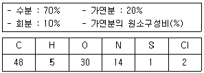
- 1.2kmol
- 1.4kmol
- 1.6kmol
- 1.8kmol
(정답률: 알수없음)
12. 최소 크기가 10cm인 폐기물을 2cm로 파쇄하고자 할 때 Kick's 법칙에 의한 소요 에너지는 동일 폐기물을 4cm로 파쇄할 때 소요되는 에너지의 몇 배인가? (단, n=1로 가정한다.)
- 1.66배
- 1.76배
- 1.87배
- 1.97배
(정답률: 알수없음)
13. 어느 도시쓰레기의 성분 중 비 가연성 부분이 전체중량의 57%를 차지하였다. 밀도가 200kg/m3인 쓰레기가 15m3이 있을 때 가연성 쓰레기의 양은?
- 4.88t
- 3.75t
- 2.64t
- 1.29t
(정답률: 알수없음)
14. 효과적인 수거노선 설정에 관한 내용과 가장 거리가 먼 것은?
- 적은 양의 쓰레기가 발생하나 동일한 수거빈도를 받기를 원하는 수거지점은 가능한 한 같은 날 왕복 내 수거되지 않도록 한다.
- 가능한 한 지형지물 및 도로 경계와 같은 장벽을 이용하여 간선도로 부근에서 시작하고 끝나도록 배치하여야 한다.
- U자형 회전은 피하고 많은 양의 쓰레기가 발생되는 발생원은 하루 중 가장 먼저 수거하도록 한다.
- 가능한 한 시계방향으로 수거노선을 정한다.
(정답률: 알수없음)
15. 폐기물 발생량 예측방법 중 하나의 수식으로 쓰레기 발생량에 영향을 주는 각 인자들의 효과를 총괄적으로 나타내어 복잡한 시스템의 분석에 유용하게 사용할 수 있는 것은?
- 상관계수 분석모델
- 다중회귀 모델
- 동적모사 모델
- 경향법 모델
(정답률: 알수없음)
16. 투입량이 1.0t/hr이고, 회수량이 600kg/hr(그 중 회수대상물질은 550kg/hr)이며 제거량은 400kg/hr(그 중 회수대상물질은 70kg/hr)일 때 선별 효율은? (단, Worell 식 적용)
- 59%
- 69%
- 77%
- 84%
(정답률: 알수없음)
17. 다음의 쓰레기 선별에 관련된 내용 중 틀린 것은?
- Zigzag 공기 선별기는 컬럼의 층류를 발달시켜 선별효율을 증진 시킨 것이다.
- 손선별은 정확도가 높고 파쇄공정 유입전 폭발가능 위험물질을 분류할 수 있는 장점이 있다.
- 관성선별로는 가벼운 것(유기물)과 무거운 것(유기물)을 분리한다.
- 진동 스크린 선별은 주로 골재분리에 많이 이용하며 체경이 막히는 문제가 발생할 수 있다.
(정답률: 알수없음)
18. 어느 도시의 쓰레기 특성을 조사하기 위하여 시료 100kg에 대한 습윤상태의 무게와 함수율을 측정한 결과 다음 표와 같을 때 이 시료의 건조중량은?
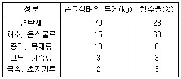
- 59kg
- 67kg
- 74kg
- 82kg
(정답률: 알수없음)
19. 다음 중 유해 폐기물의 특성과 가장 거리가 먼 것은?
- 인화성
- 부패성
- 반응성
- 부식성
(정답률: 알수없음)
20. 수분함량이 20%인 쓰레기의 수분함량을 10%로 감소시키면 감소 후 쓰레기 중량은 처음 중량의 몇 %가 되겠는가? (단, 쓰레기의 비중은 1.0 기준)
- 82.6%
- 84.2%
- 86.3%
- 88.9%
(정답률: 알수없음)
2과목: 폐기물 처리 기술
21. 어느 도시의 쓰레기 발생량은 1,000t/일 이고 밀도는 0.5t/m3이며 trench법으로 매립할 계획이다. 압축에 따른 부피감소율 40%, trench 깊이 2.5m, 매립에 사용되는 도랑면적 점유율이 전체부지의 60%라면 년간 필요한 전체 부지 면적은?
- 94,000m2
- 134,000m2
- 292,000m2
- 336,000m2
(정답률: 알수없음)
22. 침출수의 특성이 다음과 같을 때 처리공정의 효율성이 가장 알맞게 짝지어진 것은?
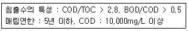
- 생물학적처리-양호, 화학적침전(석회투여)-양호, 화학적산화-불량, 이온교환수지-불량
- 생물학적처리-양호, 화학적침전(석회투여)-불량, 화학적산화-불량, 이온교환수지-양호
- 생물학적처리-양호, 화학적침전(석회투여)-불량, 화학적산화-양호, 이온교환수지-양호
- 생물학적처리-양호, 화학적침전(석회투여)-불량, 화학적산화-불량, 이온교환수지-불량
(정답률: 알수없음)
23. 고형물 4.2%를 함유한 슬러지 120000kg을 농축조로 이송한다. 농축조에서 손실을 무시하고 소화조로 이송할 경우 슬러지의 무게가 60000kg일 때 농축된 슬러지의 고형물 함유율은? (단, 완전농축, 슬러지 비중은 1.0으로 가정함)
- 5.2%
- 6.8%
- 7.3%
- 8.4%
(정답률: 알수없음)
24. 도랑식(trench)으로 밀도가 0.55t/m3인 폐기물을 매립하려고 한다. 도랑의 깊이가 3m이고, 다짐에 의해 폐기물을 2/3로 압축시킨다면 도랑 1m2당 매립할 수 있는 폐기물은 몇 ton인가? (단, 기타 조건은 고려 안함)
- 약 2.5
- 약 3.0
- 약 3.5
- 약 4.0
(정답률: 알수없음)
25. 호기성 소화방식으로 분뇨를 200kℓ/day로 처리하고자 한다. 1차 처리에 필요한 산기관수는? (단, 분뇨 BOD 20,000mg/ℓ, 1차 처리효율 60%, 소요공기량 50m3/BODkg, 산기관 통풍량 0.5m3/minㆍ개)
- 122개
- 143개
- 167개
- 182개
(정답률: 알수없음)
26. 다음 슬러지의 물의 형태 중 탈수성이 가장 용이한 것은?
- 모관결합수
- 표면부착수
- 내부수
- 입자경계수
(정답률: 알수없음)
27. 슬러지를 건조하여 농토로 사용하기 위하여 여과기로 원래 슬러지의 함수율을 30%로 낮추고자 한다. 여과속도가 10kg/m2ㆍhr(건조고형물기준), 여과면적 10m2의 조건에서 시간당 탈수 슬러지 발생량은?
- 약 124kg/hr
- 약 132kg/hr
- 약 143kg/hr
- 약 151kg/hr
(정답률: 알수없음)
28. 오염토양을 정화하는 기법인 토양증기추출법의 장단점으로 틀린 것은?
- 오염물질의 독성은 변화가 없다.
- 추출된 기체는 대기오염방지를 위해 후처리가 필요하다.
- 기계 및 장치가 복잡하여 설치 기간이 길다.
- 지반구조의 복잡성으로 총 처리시간을 예측하기가 어렵다.
(정답률: 알수없음)
29. 고화처리법 중 열가소성 플라스틱법(Thermoplastic Process)에 관한 설명으로 틀린 것은?
- 용출손실율이 시멘트 기초법보다 낮다.
- 고온분해되는 물질에 주로 사용된다.
- 혼합률이 비교적 높다.
- 고화처리된 폐기물성분을 회수하여 재활용할 수 있다.
(정답률: 알수없음)
30. 3785m3/일 규모의 하수처리장의 유입수의 BOD와 SS농도가 각각 200mg/L라고 하고, 1차 침전에 의하여 SS는 50%, 이에 따라 BOD도 30% 제거된다. 후속처리인 활성슬러지공법(폭기조)에 의해 남은 BOD의 90%가 제거되며 제거된 KgBOD 당 0.1kg의 슬러지가 생산된다면 1차 침전에서 발생한 슬러지와 활성슬러지공법에 의해 발생된 슬러지량의 총합(kg/일)은? (단, 비중은 1.0기준, 기타 조건은 고려 안함)
- 약 329
- 약 426
- 약 517
- 약 644
(정답률: 알수없음)
31. 함수율 95%인 슬러지를 함수율 70%의 탈수 cake로 만들었을 경우의 무게비(탈수 후/탈수 전)는? (단, 비중 1.0 분리액으로 유출된 슬러지량은 무시)
- 1/4
- 1/5
- 1/6
- 1/7
(정답률: 알수없음)
32. 다음 중 토양 층위를 나타내는 층위 명에 해당 되지 않는 것은?
- 0층
- B층
- R층
- D층
(정답률: 알수없음)
33. 슬러지 매립지 침출수에 함유되어 있는 암모니아를 염소로 처리하려고 한다. 침출수 발생량은 1890m3/d이고, 이를 처리하기 위해 7.7kg/d의 염소를 주입하고 잔류염소 농도는 0.2mg/L 이었다면 염소요구량은 몇 mg/L인가?
- 약 3.9
- 약 4.6
- 약 5.2
- 약 6.4
(정답률: 알수없음)
34. 매립지의 총면적은 35km2이고 년간 평균 강수량이 1100mm가 될 때 그 매립지에서 침출수로의 유출률이 0.5 이었다고 한다. 이 때 침출수의 일 평균처리 계획수량으로 가장 적절한 것은? (단, 강우강도 대신에 평균 강수량으로 계산)
- 약 43000m3/day
- 약 53000m3/day
- 약 63000m3/day
- 약 73000m3/day
(정답률: 알수없음)
35. 고형화 처리 중 시멘트 기초법에서 가장 흔히 사용되는 보통 포틀랜드 시멘트 성상의 주 성분은?
- CaO, Al2O3
- CaO, SiO2
- CaO, MgO
- CaO, Fe2O3
(정답률: 알수없음)
36. 혐기성 위생매립지에서 발생 되는 가스의 조성을 검사한 결과, 일정 기간 동안 CH4, CO2의 가스 구성비(부피%)가 각각 55%, 40%로 나타나고 있다면 이 때 매립지 내의 생물반응단계로 가장 적절한 것은?
- 준호기성 상태
- 임의성 상태
- 완전 혐기성 상태
- 혐기성 시작 상태
(정답률: 알수없음)
37. 연직차수막과 표면차수막의 비교로 알맞지 않는 것은?
- 지하수 집 배수시설의 경우 연직차수막은 필요하나 표면 차수막은 불필요하다.
- 연직차수막은 지하에 매설하기 때문에 차수성 확인이 어렵다.
- 연직차수막은 차수막 단위면적당 공사비는 비싸지만 총공사로는 싸다.
- 연직차수막은 차수막 보강시공이 가능하다.
(정답률: 알수없음)
38. 토양오염 물질 중 BTEX에 포함 되지 않는 것은?
- 벤젠
- 톨루엔
- 에틸렌
- 자일렌
(정답률: 알수없음)
39. 다음 조건의 중금속 슬러지를 시멘트 고형화할 때 부피변화율(VCF)은?
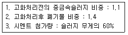
- 1.128
- 1.189
- 1.257
- 1.294
(정답률: 알수없음)
40. 합성차수막의 재료중 High-density polyethylene에 관한 설명으로 틀린 것은?
- 유연하지 못하여 구멍 등 손상을 입을 우려가 있다.
- 대부분의 화학물질에 대한 저항성이 높다.
- 온도에 대한 저항성이 낮다.
- 접합상태가 양호하다.
(정답률: 알수없음)
3과목: 폐기물 소각 및 열회수
41. RDF를 대량 사용하고자 할 경우의 구비조건에 대한 설명으로 틀린 것은?
- 칼로리가 낮을 것
- 함수율이 낮을 것
- 재의 양이 적을 것
- RDF의 조성이 균일할 것
(정답률: 알수없음)
42. 세로, 가로, 높이가 각각 1.0m, 1.2m, 1.5m인 연소실의 연소실 열부하량을 3×105kcal/m3hr로 유지하기 위해서 연소실 내로 발열량 10.000kcal/kg의 중유가 1시간당 투입, 연소 되는 양(kg)은?
- 35kg
- 46kg
- 54kg
- 63kg
(정답률: 알수없음)
43. 소각로에서 열교환기를 이용해 배기가스의 열을 전량 회수하여 급수 예열을 한다고 한다면 급수 입구온도가 10℃일 경우 급수의 출구 온도(℃)는? (단, 배기가스 유량 1000kg/hr, 급수량 1000kg/hr, 배기가스 입구온도 400℃, 출구온도 100℃, 물비열 1.03kcal/kg℃, 배기가스 평균정압비열 0.25kcal/kg℃)
- 72
- 77
- 83
- 87
(정답률: 알수없음)
44. 쓰레기를 소각 후 남은 재의 중량은 소각 전 쓰레기 중량의 1/4이다. 쓰레기 20톤을 소각하였을 때 재의 용량은 2m3이라 하면 재의 밀도는?
- 1.3톤/m3
- 1.7톤/m3
- 2.1톤/m3
- 2.5톤/m3
(정답률: 알수없음)
45. 백필터를 통과한 가스의 분진농도가 10mg/m3이고 분진의 통과율이 5%라면 백필터를 통과하기 전 가스 중의 분진농도는?
- 0.1g/m3
- 0.2g/m3
- 0.4g/m3
- 0.5g/m3
(정답률: 알수없음)
46. 황 성분이 2%인 중유 100ton/hr를 연소하는 열 설비에서 배기가스 중 SO2를 CaCO3로 완전 탈황하는 경우 이론상 필요한 CaCO3의 양(ton/hr)은? (단, Ca : 40, 중유 중 S는 모두 SO2로 산화된다.)
- 약 3.1
- 약 4.9
- 약 5.6
- 약 6.3
(정답률: 알수없음)
47. 탄소 84%, 수소 16%로 구성된 액상폐기물을 완전 연소할 때 (CO2)max은? (단, 표준상태, 이론 건조가스 기준)
- 약 12.5%
- 약 14.5%
- 약 18.5%
- 약 19.5%
(정답률: 알수없음)
48. 메탄의 저위발열량이 8,540kcal/Sm3으로 계산되었다면 고위발열량의 측정치는? (단, 수증기의 증발 잠열은 480kcal/Sm3)
- 9,000 kcal/Sm3
- 9,500 kcal/Sm3
- 10,000 kcal/Sm3
- 10,500 kcal/Sm3
(정답률: 알수없음)
49. 액체 주입형 연소기에 관한 설명으로 틀린 것은?
- 소각재의 배출설비가 없으므로 회분함량이 낮은 액상폐기물에 사용한다.
- 노즐 등 구동장치가 많아 고장이 잦고 운영비가 비교적 많이 소요된다.
- 고형분의 농도가 높으면 버너가 막히기 쉽고 대량 처리가 어렵다.
- 하방점화 방식의 경우에는 염이나 입상물질을 포함한 폐기물의 소각이 가능하다.
(정답률: 알수없음)
50. 연소기 중 다단로의 장단점으로 틀린 것은?
- 분진 발생율이 높다.
- 체류시간이 길어 휘발성이 적은 폐기물연소에 유리하다.
- 온도반응이 비료적 신속하여 보조연료사용 조절이 용이하다.
- 많은 연소영역이 있어 연소효율을 높일 수 있다.
(정답률: 알수없음)
51. 저위발열량이 10,000kcal/kg의 중유를 연소시키는데 필요한 이론 공기량은? (단, Rosin 식 적용)
- 약 8.5Sm3/kg
- 약 10.5Sm3/kg
- 약 12.5Sm3/kg
- 약 14.5Sm3/kg
(정답률: 알수없음)
52. 어떤 폐기물의 원소조성이 다음과 같을 때 연소시 필요한 이론공기량은?
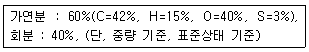
- 약 3.2kg/kg
- 약 3.8kg/kg
- 약 4.3kg/kg
- 약 5.1kg/kg
(정답률: 알수없음)
53. 탄소 86%, 수소12%, 황 2%의 조성을 가진 액체연료를 매시 100kg 연소한 후 배기가스를 분석한 결과가 다음과 같다면 이 때 매시 필요한 실제 공기량은?
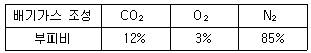
- 약 1300 [Sm3/h]
- 약 1800 [Sm3/h]
- 약 2300 [Sm3/h]
- 약 2800 [Sm3/h]
(정답률: 알수없음)
54. 메탄 80%, 에탄 11%, 프로판 6%, 나머지는 부탄으로 구성된 기체연료의 고위발열량이 13,000/kcal/Sm3이다. 기체연료의 저위발열량(kcal/Sm3)은? (단, 메탄:CH4, 프로판:C3H8, 부탄:C4H10, 부피기준)
- 약 11300
- 약 11500
- 약 11700
- 약 11900
(정답률: 알수없음)
55. 저위발열량 13500kcal/Sm3인 기체연료를 연소시, 이론습연소가스량이 25Sm3/Sm3이고 이론연소온도는 2500℃라고 한다. 적용된 연소가스의 평균 정압비열은? (단, 연소용 공기, 연료 온도는 15℃)
- 0.145(kcal/Sm3℃)
- 0.178(kcal/Sm3℃)
- 0.217(kcal/Sm3℃)
- 0.264(kcal/Sm3℃)
(정답률: 알수없음)
56. 다음 조건에 알맞은 소각로의 용적(m3)은?
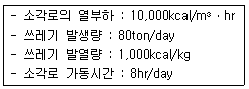
- 400
- 600
- 800
- 1000
(정답률: 알수없음)
57. 유동층 소각로방식에 대한 설명 중 틀린 것은?
- 상(床)으로부터 찌꺼기의 분리가 어렵다.
- 기계적 구동부분이 적어 고장율이 낮다.
- 폐기물의 투입이나 유동화를 위해 파쇄가 필요하다.
- 가스온도가 높고 과잉공기량이 많다.
(정답률: 알수없음)
58. 증기터어빈의 분류관점에 따른 터어빈 형식이 잘못 연결된 것은?
- 증기 작동방식 - 충동 터어빈, 혼합식 터어빈
- 흐름수 - 단류 터어빈, 복류 터어빈
- 피구동기 - 직결형 터어빈, 감속형 터어빈
- 증기 이용방식 - 반경류 터어빈, 축류 터어빈
(정답률: 알수없음)
59. 열교환기 중 절탄기에 관한 설명으로 틀린 것은?
- 급수 예열에 의해 보일러 수와의 온도차가 증가함에 따라 보일러 드럼에 열응력이 발생한다.
- 급수온도가 낮을 경우, 굴뚝가스 온도가 저하하면 절탄기 저온부에 접하는 가스온도가 노점에 달하여 절탄가스를 부식시킨다.
- 굴뚝의 가스온도 저하로 인한 굴뚝 통풍력의 감소에 주의 하여야 한다.
- 보일러 절열면을 통하여 연소가스의 여열로 보일러 급수를 예열하여 보일러의 효율을 높이는 장치이다.
(정답률: 알수없음)
60. 연소가스 중의 질소산화물(NOx) 제거방법으로 채택한 SCR(Selective Catalytic Reduction)의 설명으로 틀린 것은?
- 적정 운전 온도범위는 650~700℃이다.
- 먼지, SOx 등에 의해 효율이 저하 된다.
- 촉매 반응탑 설치가 필요하다.
- 촉매는 TIO2-V2O5계가 많이 사용된다.
(정답률: 알수없음)
4과목: 폐기물 공정시험기준(방법)
61. 아래 내용은 강열감량 및 유기물 함량 시험방법에 대한 내용이다. ()안에 맞는 것은?
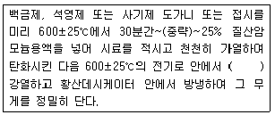
- 30분
- 2시간
- 2시간 30분
- 3시간
(정답률: 알수없음)
62. 다음에 설명한 시료 축소 방법은?
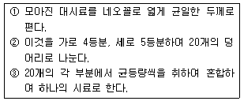
- 등분법
- 구획법
- 교호삽법
- 원추4분법
(정답률: 알수없음)
63. 다음은 흡광광도법에 의한 비소의 측정원리를 설명한 것이다. ()안에 알맞은 것은?
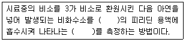
- 디에틸디티오카르바민산은-적자색의 흡광도
- 디페닐카르바지드-적자색의 흡광도
- 피라졸론-청색의 흡광도
- 염화제일주석-청색의 흡광도
(정답률: 알수없음)
64. 가스크로마토그래피를 이용한 유기인의 정량방법에 관한 설명으로 틀린 것은?
- 측정시 칼럼의 온도는 130~230℃, 검출기 온도는 170~250℃가 적당하다.
- 검출기로는 불꽃광도 검출기(FPD)를 이용한다.
- 정제용 칼럼으로는 규산칼럼, 플로리실 칼럼, 활설탄칼럼을 사용한다.
- 운반가스는 순도 99.9% 이상의 질소를 사용하며 유기인 화합물이 1~2분 안에 유출되도록 유량을 조절한다.
(정답률: 알수없음)
65. 시료 중 수분함량 및 고형물함량을 정량하고자 실험한 결과가 다음과 같다면 고형물 함량은? (단, 증발접시의 순무게(W1)=245g, 시료를 넣은 후 증발접시의 무게(W2)=260g, 건조 후 증발접시의 무게(W3)=250g이었다.)
- 약 33%
- 약 38%
- 약 43%
- 약 48%
(정답률: 알수없음)
66. 원자흡광광도법에서 분석값의 신뢰성을 확보하기 위하여 반복정밀도를 구하는 식은? (단, n:분석값의 개수(10이상), xI=개개의 분석값)
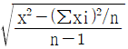
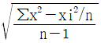
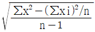
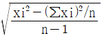
(정답률: 알수없음)
67. 폐기물 공정시험기준(방법)에서 규정하고 있는 시험법 중 흡광광도법에 의한 분석 항목이 아닌 것은?
- Cr
- Cu
- As
- PCBs
(정답률: 알수없음)
68. 폐기물공정시험기준(방법)상 용출용액 중의 PCBs 분석 시 유효측정농도 기준은?
- 0.00⑤mg/L 이상
- 0.0⑤mg/L 이상
- 0.⑤mg/L 이상
- 0.5mg/L 이상
(정답률: 알수없음)
69. 일반적으로 사용되는 흡광광도 분석장치에 대한 설명으로 적합하지 않은 것은?
- 광원부, 파장선택부, 시료부, 측광부로 구성된다.
- 광전분광광도계는 파장선택부에서 단색화장치를 사용한 장치로 구조에 따라 광전형과 광전증배형이 있다.
- 흡수셀은 재질에 따라 유리제는 주로 가시 및 근적외부, 석영제는 자외부, 플라스틱제는 근적외부의 파장범위를 측정할 때 사용한다.
- 광전광도계는 파장선택부에 필터를 사용한 장치로 단광속형이 많고 비교적 구조가 간단하여 작업분석용에 적당하다.
(정답률: 알수없음)
70. 폐기물공정시험기준(방법)에서 시안분석방법으로 맞는 것은?
- 원자흡광광도법
- 이온전극법
- 가스크로마토그래피법
- 유도결합플라즈마발광광도법
(정답률: 알수없음)
71. 8톤 차량에 적재되어 있는 폐기물의 시료 채취 수는?
- 4개
- 6개
- 8개
- 9개
(정답률: 알수없음)
72. 다음 용어의 정의에 대한 설명 중 틀린 것은?
- “약”이라 함은 기재된 양에 대하여 ±10% 이상의 차가 있어서는 안된다.
- 감압 또는 진공이라 함은 따로 규정이 없는 한 15mmH2O 이하를 말한다.
- 방울수라 함은 20℃에서 정제수 20방울을 적하 할 때 그 부피가 약 1mℓ 되는 것을 뜻한다.
- “정확히 단다”라 함은 규정된 양의 검체를 분석용 저울로 0.1mg까지 다는 것을 말한다.
(정답률: 알수없음)
73. 시료의 전처리 방법에 관한 설명으로 틀린 것은?
- 질산-염산에 의한 유기물분해 방법은 유기물 등을 많이 함유하고 있는 대부분의 시료에 적용되며 칼슘, 바륨, 납 등을 다량 함유한 시료는 난용성염을 생성한다.
- 회화에 의한 유기물분해 방법은 목적 성분이 400℃ 이상에서 휘산되지 않고 쉽게 회화될 수 있는 시료에 적용된다.
- 질산-과염소산-불화수소산에 의한 유기물분해 방법은 다량의 점토질 또는 규산염을 함유한 시료에 적용된다.
- 마이크로파에 의한 유기물분해 방법은 마이크로파영역에서 극성분자나 이온이 쌍극자모멘트와 이온전도를 일으켜 온도가 상승하는 원리를 이용한다.
(정답률: 알수없음)
74. 다음은 카드뮴 분석에 관한 설명이다. 이 중 잘못된 것은?
- 원자흡광광도법 적용시 가스는 가연성가스-아세틸렌, 조연성가스-공기를 사용한다.
- 원자흡광광도법에 의한 정량시 시료 중에 알칼리금속의 할로겐 화합물을 다량 함유하는 경우에는 분자 흡수나 광 산란에 의한 오차가 발생한다.
- 흡광광도법 적용시 디티존과 반응하여 생성하는 청색의 카드뮴 착염을 수산화나트륨과 시안화 칼륨용액으로 역추출한다.
- 흡광광도법 적용시 시료 중 다량의 철과 망간을 함유가는 경우 디티존에 의한 카드뮴추출이 불안정하다.
(정답률: 알수없음)
75. 폐기물공정시험기준(방법)에서 ‘온수’는 몇 ℃로 정의하고 있는가?
- 40~50℃
- 50~60℃
- 60~70℃
- 70~80℃
(정답률: 알수없음)
76. 휘발성 저급염소화 탄화수소류를 가스크로마토그래피법으로 측정 시 기구 및 기기에 대한 설명으로 틀린 것은?
- 검출기는 전자포획검출기 또는 전해전도검출기를 사용한다.
- 칼럼은 석영제로서 내경 3mm, 길이 0.3,m의 것을 사용한다.
- 운반가스는 99.999V/V% 이상의 질소로서 유량은 40~80mL/분 범위이다.
- 시료주입부 온도는 150~250℃ 범위이다.
(정답률: 알수없음)
77. 폐기물의 시료채취 방법에 관한 내용 중 틀린 것은?
- 시료의 양은 1회에 100g 이상 채취하며 다만 소각재의 경우에는 1회에 300g 이상을 채취한다.
- 폐기물소각시설의 연속식 연소방식 소각재 반출설비에서 채취하는 경우, 바닥재 저장조에서는 부설된 크레인을 이용하여 채취한다.
- 폐기물소각시설의 연속식 연소방식 소각재 반출설비에서 채취하는 경우, 비산재 저장조에서는 낙하구 및에서 채취한다.
- 시료가 대형콘크리트 고형물로써 분쇄가 어려울 때는 임의의 5개소에서 채취하여 각각 파쇄하여 100g씩 균등량 혼합하여 채취한다.
(정답률: 알수없음)
78. 0.002N NaOH 용액의 pH는?
- 11.3
- 11.5
- 11.7
- 119
(정답률: 알수없음)
79. 할로겐화 유기물질을 가스크로마토그래피/질량분석법으로 분석하는 경우 유료측정농도 기준은?
- 각 화합물에 대하여 1mg/kg 이상으로 한다.
- 각 화합물에 대하여 3mg/kg 이상으로 한다.
- 각 화합물에 대하여 5mg/kg 이상으로 한다.
- 각 화합물에 대하여 10mg/kg 이상으로 한다.
(정답률: 알수없음)
80. 시료채취시 대상폐기물의 양이 80톤인 경우 시료의 최소수는?
- 10
- 15
- 20
- 25
(정답률: 알수없음)
5과목: 폐기물 관계 법규
81. 다음 중 광역폐기물처리시설 설치ㆍ운영의 수탁자 범위에 포함되지 않는 것은?
- 환경관리공단
- 한국환경자원공사
- 지방자치법에 따른 지방자치단체조합으로서 폐기물의 광역처리를 위하여 설립된 조합
- 해당 광역폐기물처리시설을 시공한 자(그 시설의 운영을 위탁하는 경우에만 해당한다.)
(정답률: 알수없음)
82. 다음은 사후관리기준 및 방법 중 침출수 관리방법에 관한 설명이다. ()안에 알맞은 내용은?
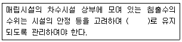
- 0.3미터 이하
- 0.6미터 이하
- 1.0미터 이하
- 2.0미터 이하
(정답률: 알수없음)
83. 시ㆍ도지사는 폐기물 재활용 신고를 한 자에게 재활용사업의 정지를 명령하여야 하는 경우 대통령령으로 정하는 바에 따라 그 재활용사업의 정지를 갈음하여 5천만원 이하의 과징금을 부과할 수 있는데 이에 해당하는 경우가 아닌 것은?
- 해당 재활용사업의 정지로 인하여 그 재활용사업의 이용자가 폐기물을 위탁처리하지 못하여 폐기물이 사업장 안에 적체됨으로써 이용자의 사업활동에 막대한 지장을 줄 우려가 있는 경우
- 해당 재활용사업체에 보관 중인 폐기물 또는 그 재활용 사업의 이용자가 보관 중인 폐기물의 적체에 따른 환경오염으로 인하여 인근지역 주민의 건강에 위해가 발생되거나 발생될 우려가 있는 경우
- 영업정지 명령으로 해당 재활용사업체의 도산이 발생될 우려가 있는 경우
- 천재지변이나 그 밖의 부득이한 사유로 해당 재활용사업을 계속하도록 할 필요가 있다고 인정되는 경우
(정답률: 알수없음)
84. 생활폐기물 및 사업장생활계폐기물의 수집ㆍ운반업을 하고자 아는 자가 갖추어야 할 장비가 아닌 것은?
- 밀폐식 운반차량 1대 이상(적재능력합계 15m3 이상)
- 탤크로리 또는 카고트럭 2대 이상
- 운반용 압축차량 또는 압착차량 1대 이상
- 기계식 상차장치가 부착된 차량 1대 이상(특별시ㆍ광역시에 한하고 광역시의 경우 군지역은 제외)
(정답률: 알수없음)
85. 폐기물을 매립하는 시설 중 사후관리이행보증금의 사전적립대상인 시설의 면적기준은?
- 3,000m2 이상
- 3,300m2 이상
- 3,600m2 이상
- 3,900m2 이상
(정답률: 알수없음)
86. 생활폐기물관리 제외지역을 지정하는 주체는?
- 환경부장관
- 유역환경청장
- 시장ㆍ군수ㆍ구청장
- 국립환경과학원장
(정답률: 알수없음)
87. 폐기물처리업의 변경신고를 하여야 할 사항과 가장 거리가 먼 것은?
- 상호의 변경
- 연락장소 또는 사무실 소재지의 변경
- 임시차량의 증차 또는 운반차량의 감차
- 처리용량 누계의 30% 이상 변경
(정답률: 알수없음)
88. 다음 ()에 들어갈 알맞은 것끼리 순서대로 옳게 짝지어진 것은?
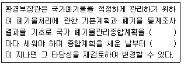
- 5년, 3년
- 5년, 5년
- 10년, 3년
- 10년, 5년
(정답률: 알수없음)
89. 폐기물시설인 소각시설의 정기검사 항목에 해당하지 않는 것은?
- 바닥재 강열감량
- 소각재의 흩날림 방지조치 여부
- 배기가스온도 적절여부
- 연소실 가스체류시간
(정답률: 알수없음)
90. 다음 중 지점폐기물로만 묶여진 것은?
- 폐유기용제, 폐유, 폐석면
- 폐유기용제, 폐유, 폐가구류
- 폴리클로리네이티드비페닐 함유 폐기물, 폐석면, 동물성잔재물
- 폐석면, 동물성잔재물, 폐가구류
(정답률: 알수없음)
91. 폐기물처리시설을 설치ㆍ운영하는 자는 소각시설의 경우 최초 정기검사를 사용 개시일로부터 몇 년 이내에 받아야 하는가?
- 1년
- 3년
- 5년
- 10년
(정답률: 알수없음)
92. 폐기물부담금 및 재활용부과금의 용도로 옳지 않은 것은?
- 재활용가능자원의 구입 및 비축
- 재활용을 촉진하기 위한 사업의 지원
- 재활용품의 검사를 위한 장비구입 및 기술지원
- 폐기물의 재활용을 위한 사업 및 계기물처리시설의 설치지원
(정답률: 알수없음)
93. 토지이용의 제한기간은 폐기물매립시설의 사용이 종료되거나 그 시설이 패쇄된 날부터 몇 년 이내인가?
- 5년
- 10년
- 15년
- 20년
(정답률: 알수없음)
94. 폐기물처리업자가 보존하여야 하는 폐기물 수집, 운반, 처리상황 등에 관한 내용을 기록한 장부의 보존 기간(최종기재일 기준)으로 옳은 것은?
- 1년
- 2년
- 3년
- 4년
(정답률: 알수없음)
95. 대통령령으로 정하는 폐기물처리시설을 설치, 운영하는자는 그 폐기물처리시설의 설치, 운영이 주변지역에 미치는 영향을 몇 년마다 조사하고 그 결과를 누구에게 제출하여야 하는가?
- 3년, 유역환경청장
- 3년, 환경부장관
- 5년, 유역환경청장
- 5년, 환경부장관
(정답률: 알수없음)
96. 다음 중 기술관리인을 두어야 할 폐기물처리시설?
- 지정폐기물 매립시설로서 면적이 3,000m2인 시설
- 지정폐기물외의 폐기물을 매립하는 시설로서 매립 용적이 11,000m3인 시설
- 압축ㆍ파쇄ㆍ분쇄 또는 절단시설로서 1일 처리능력이 150ton인 시설
- 사료화ㆍ퇴비화 또는 연료화시설로서 1일 처리능력이 3ton인 시설
(정답률: 알수없음)
97. 다음 중 액체상태의 것은 고온소각하거나 고온용융처리하고, 고체상태의 것은 고온소각 또는 고온용융처리하거나 차단형 매립시설에 매립하여야 하는 것은?
- 폐농약
- 폐촉매
- 폐주물사
- 광재
(정답률: 알수없음)
98. 폐기물관리법을 적용하지 아니하는 물질에 대한 내용으로 옳지 않은 것은?
- 용기에 들어 있지 아니한 기체상의 물질
- 수질환경보전법에 의한 오수ㆍ분뇨 및 가축분뇨
- 하수도법에 따른 하수
- 원자력법에 따른 방사성물질과 이로 인하여 오염된 물질
(정답률: 알수없음)
99. 폐기물 재활용을 위한 에너지의 회수 기준과 관련된 다음 표의 ()안에 알맞은 것은?
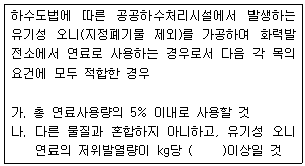
- 3,000kcal
- 4,000kcal
- 5,000kcal
- 6,000kcal
(정답률: 알수없음)
100. 특별자치도지사, 시장ㆍ군수ㆍ구청장이나 공원ㆍ도로 등 시설의 관리자가 폐기물의 수집을 위하여 마련한 장소나 설비 외의 장소에 사업장폐기물을 버리거나 매립한 자에게 부과되는 벌칙기준으로 옳은 것은?
- 5년 이하의 징역 또는 5천만원 이하의 벌금
- 7년 이하의 징역 또는 5천만원 이하의 벌금
- 5년 이하의 징역 또는 7천만원 이하의 벌금
- 7년 이하의 징역 또는 7천만원 이하의 벌금
(정답률: 알수없음)
MHT = (총 쓰레기 발생량) / (수거인 수 × 1일 작업시간 × (1 - 년간 휴가일수/365))
여기에 주어진 값들을 대입하면,
MHT = 165,000 / (300 × 8 × (1 - 90/365))
MHT = 165,000 / (300 × 8 × 0.7534)
MHT = 86.44
따라서, 보기에서 가장 가까운 값인 "4.0"이 정답이 된다.